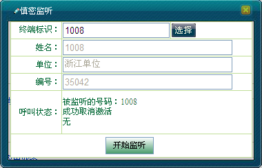

强拆是建立在慎密监听的基础上的。即首先是调度台对某一个移动用户进行跟踪，当该移动用户有单呼产生时，调度台则对该呼叫进行监听，监听过程中对被监听呼叫执行强拆，即被监控的用户被迫释放呼叫。作为可选部分，强拆也可以在跟踪后，满足监听要求的呼叫出现时，调度台直接对呼叫进行强拆。
在本节主要说明：
例：若用户“1007”与“1008”正在全双工通话中，同时“1008”正处于被调度员监听的状态。则具体强拆操作步骤如下：
1）单击＜强拆＞按钮，用户之间的全双工通话结束，且对用户“1008”的慎密监听也随之结束，如下图所示。

强拆
例：若用户“1007”与“1008”正在半双工通话中，同时调度员对“1008”发起慎密监听。则调度台对其进行强拆的具体操作步骤如下：
1）调度员单击＜强拆＞按钮，用户之间的半双工通话结束，且对用户“1008”的慎密监听也随之结束。
 说明：
说明：
强插之后不能进行强拆。
Copyright © 2012 Eastcom, Inc. All rights reserved. |
||